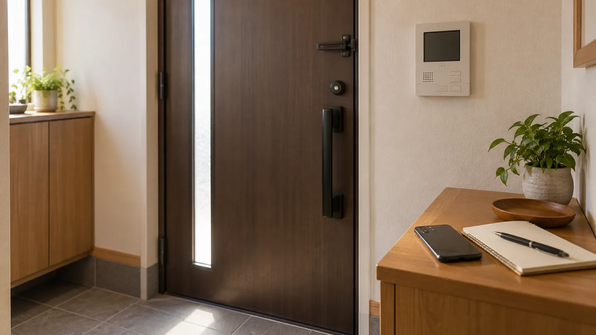
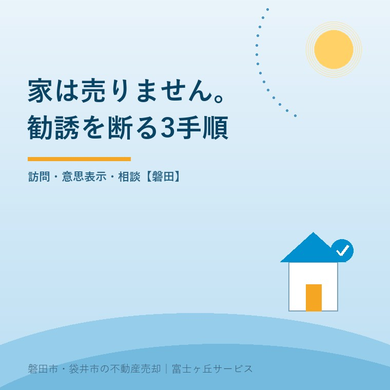

自宅売却の勧誘、磐田で断るときの3手順

2026年10月4日｜カテゴリ：売却実務・交渉

この記事の要点
親の家に売却の電話や訪問が来る。どう断ればいい？
売る意思がなければ訪問を許さず、「売却しません。今後の勧誘も不要です」と伝えます。連絡の記録を残し、困ったときは消費者ホットライン188へ。不動産業者への自宅売却はクーリング・オフできません。磐田市・袋井市・森町では、介護施設の運営から不動産事業を始めた富士ヶ丘サービスのような地域密着の会社に相談する選択肢があります。
大石浩之（磐田市／不動産業）です。親の家に売却を勧める電話が来る。断ったつもりでも、訪問の約束になっている。家族が離れて暮らしていると、どんな言葉で返せばよいかを先に決めておくだけでも、判断の時間を守れます。
国民生活センターは2026年10月1日、見守り新鮮情報第552号「リースバック契約は慎重に」を公表しました。本記事は10月4日に本文を確認しています。制度の比較に進む前に、売る意思のない家族が勧誘を断る方法を整理します。
10月1日の注意喚起は、売却後も住む契約の相談
国民生活センターが紹介したのは、自宅を売り、家賃を払いながら同じ家に住むリースバックの相談です。80歳代の相談者が長時間の勧誘を受け、契約した事例が掲載されています。注意喚起の公表日は10月1日ですが、相談が起きた日付は本文に書かれていません。
掲載事例の売却額は1,200万円です。解約を申し入れた際、手付金50万円の返金と違約金50万円を請求されたとされています。これは相談に出てくる請求内容です。適法と認定された金額でも、一般的な解約費用の相場でもありません。
同センターは、自宅を売るつもりがなければ安易に訪問を許さず、明確に断り、今後の勧誘も望まないと伝えるよう助言しています。不動産業者へ自宅を売る場合は、クーリング・オフができないことも説明しています。
私は、契約後の対処だけでなく、訪問の前に断ることを示した点を評価します。家に上げて話を聞いた後では、相手を帰らせることまで家族の負担になります。価格を比べる以前に、売却する意思があるかを起点にできる案内です。
その上で、不動産業者には「住み続けられる」という利点だけを先に押し出さないでほしいと思います。家を手放すことと、借りて住むことは別の契約です。売らないと答えた人を、条件の交渉へ引きずり込む説明をしてはいけません。
1．売却の意思がなければ、訪問の約束をしない
自宅を売却する意思がないときの最初の対応は、売却の話を聞くための訪問を約束しないことです。国民生活センターの助言に沿い、私は「自宅は売却しません。訪問はお断りします」と、判断と訪問の扱いを一緒に伝える方法を提案します。
「今日は忙しい」「家族がいない」は、別の日なら会えるという意味に受け取られる余地があります。売らないなら、日程の都合ではなく売却の意思を伝えます。断る理由を詳しく説明するために、年金や預金、介護費用の話を始める必要はありません。
| 場面 | 伝える言葉の例 | その後の対応 |
|---|---|---|
| 最初の電話 | 自宅は売却しません。訪問はお断りします。 | 訪問日時を決めず通話を終える |
| 訪問の打診 | 説明を受ける予定はありません。 | 家に招き入れず意思を伝える |
| 価格だけ聞かれた | 売る意思がないため、価格の話もしません。 | 希望額の交渉を始めない |
この表は私が提案する言い方の例です。決まった文言を一字一句言わないと断れない、という意味ではありません。本人が普段使う短い言葉で、売らないことと訪問を望まないことが伝わる形にします。
「無料で査定だけ」「近くに買いたい人がいる」という説明でも、売らない意思は変わりません。相手の価格を聞いたから比較のために別の業者へ連絡しなければ、と仕事を増やす必要もありません。情報を集めるかどうかは、持ち主が決めることです。
会社名が分からないまま話が続くと、後で経緯を整理できません。分かる範囲で商号や担当者を控えます。照合の方法は不動産会社の免許など公的情報の確認で扱っています。免許があることと、その勧誘を受け入れることは別です。
2．今後の勧誘も不要と伝え、記録を残す
売却の意思がないことを伝える際は、今後の勧誘も望まないことを併せて示します。国民生活センターの助言は、今回の訪問を断るだけで終わっていません。私は「今後の売却の勧誘も不要です。電話や訪問はしないでください」と伝える案を示します。
断った後は、日時、会社名、担当者、相手の説明、自分が伝えた言葉をメモします。逐語的に再現できなくても、分かる事実から書けば構いません。はっきりしない時刻や言葉は、推測と記録を混ぜず、不明と残します。
家族が代わりに連絡するときは、本人が売らないと考えていることを先に確認します。子が嫌だと言っているだけなのか、所有者自身が断っているのかを曖昧にしません。会社と何を話したかは本人にも戻し、家族の中で別々の返事をしないようにします。
再び電話や訪問があったときも、毎回ゼロから家の事情を説明し直す必要はありません。前に断った日付と意思表示を記録に加えます。困った状態が続くなら、家族だけで説得合戦を続けず、相談窓口へ持っていく材料にします。
資料を渡されたら、封筒や名刺、連絡先の分かるものを保管します。怒りに任せて処分すると、相談時に相手を特定しにくくなります。相手への不満を書く欄と、起きたことを書く欄を分けると、第三者に経緯を伝えやすくなります。
磐田・袋井の家族は、断る役より先に本人の意思を共有する
磐田市・袋井市の親の家へ勧誘が来て、子が離れて暮らしている場合、私なら家族共通の短い対応メモを作ります。本人が売りたいのか、売りたくないのか、まだ判断していないのか。その確認が、強く断る家族を決めることより先です。
私はこう考えます。売らない家の値段を、玄関先で交渉する必要はない。売却を仕事にする私が言うのも変かもしれませんが、持ち主にその意思がなければ、商談を始める理由がありません。家族が一日考える時間を確保できたなら、それだけで相談の成果です。
私なら、電話の近くに置く紙へ「売却しません」「今後の勧誘も不要です」「困ったら家族へ連絡」の3行を書きます。これは特定のお客様の実話ではなく、私の提案です。長い法律の説明を覚えてもらうより、その場で使える言葉を先にそろえます。
一方で迷うのは、親自身が介護費用を心配し、売却の話を聞きたいと考えている場合です。家族の心配を理由に、本人の選択まで取り上げたくはありません。その場合は玄関先の勧誘と切り離し、資料を持ち帰って検討する時間を設けるよう案内します。
検討に進むなら、国民生活センターは複数の事業者に価格の意見を聞くことを勧めています。住み続ける間の家賃負担と、退去を求められた場合の転居先も確認事項です。売却代金だけを見て老後の安心まで手に入る、と判断しないことです。
仕組みを比較したい家族には、リースバックと老後資金の考え方が次の材料になります。売ること自体を選ぶ段階になれば、買取と仲介を手取りで比べる視点も使えます。断るために、先に商品を勉強し尽くす必要はありません。
3．困ったら188へ、契約後は書類も用意する
自宅売却の勧誘で困ったとき、国民生活センターは自治体の消費生活センター等と、消費者ホットライン188を案内しています。磐田・袋井の家族も、まず188へ相談できます。家族だけで違約金の当否を判断する前に、状況を伝えて相談先を確かめます。
不動産業者へ自宅を売る取引は、クーリング・オフできません。「訪問だったから8日以内なら白紙にできる」と考えて署名をするのは危険です。他方、クーリング・オフがないことと、契約について一切相談できないことも同じではありません。
既に契約した場合は、売買契約書、リースバックなら賃貸借契約書、説明資料、入出金の記録を集めます。いつ誰が来たか、どのくらい話したか、どんな説明を受けたかも、本人が話せる範囲で残します。書類が全部そろうまで相談を遅らせず、欠けているものも伝えます。
解約したいと伝えた日時と、相手が請求した内容は分けて控えます。国民生活センターの掲載例と金額が同じでも、同じ結論になるとは限りません。手付金を返すだけで終わるのか、違約金が有効なのかといった判断は、契約と勧誘の経緯を見た専門家に確認を。
- 売らないなら訪問を約束せず、意思を短く伝える。
- 今後の勧誘も不要と伝え、日時とやり取りを記録する。
- 困ったら188へ。契約後は書類と入出金記録も用意する。
富士ヶ丘サービスは介護と不動産を一体で相談し、磐田・袋井の家族が困らない売却を支援します。売らない選択も含めて材料を整理するのが私の立場です。私は、まず本人の意思と判断時間を守るよう案内します。契約解除などの個別判断は、弁護士などの専門家に確認を。
よくある質問
自宅売却の勧誘、磐田で断るときの3手順について、判断前に確かめたい点を整理します。
- 売るつもりはないけれど、査定の話だけ聞いてもよいですか？
- 売却する意思がない場合、国民生活センターは安易に訪問を許さないよう案内しています。価格を知ることと、相手を自宅へ招くことは別です。関心がなければ「自宅は売りません。訪問も今後の勧誘も不要です」と伝えます。後から自分の意思で情報を集めたくなったときは、家族で目的と相談先を決める方法があります。
- 訪問で自宅を売る契約をしたら、8日以内なら取り消せますか？
- 不動産業者へ自宅を売却する場合は、クーリング・オフできないと国民生活センターが説明しています。訪問だったことだけで8日以内の撤回を前提にしないでください。一方、どのような解約等が可能かは契約内容や勧誘の経緯によります。契約書とやり取りを保存して188などに相談し、個別判断は弁護士などの専門家に確認を。
- 親が契約したと言っています。家族は何を準備すればよいですか？
- まず本人から経緯を聞き、売買契約書、賃貸借契約書、受け取った説明資料、入出金の記録を集めます。勧誘の日と時間、会社名、担当者、解約を申し出た日も分かる範囲で残します。家族だけで返金額や違約金の支払いを約束せず、消費者ホットライン188へ相談します。本人の意思と契約の扱いを分け、専門家に確認を。

この記事を書いた人：大石浩之（磐田市／不動産業・宅地建物取引士）
富士ヶ丘サービス株式会社。介護施設の運営から不動産事業を始め、磐田市・袋井市・森町で、介護と相続、実家の売却を一体で相談できる窓口を設けています。家族が困らない売却のため、資料と現地の条件を一件ずつ整理します。著者プロフィール
本記事は2026年10月4日時点の公開情報と筆者の意見です。制度・数値・手続き・契約条件は変更されることがあります。税務・登記・相続・重要事項説明・契約などの個別判断は、税理士・司法書士・弁護士などの専門家に確認を。